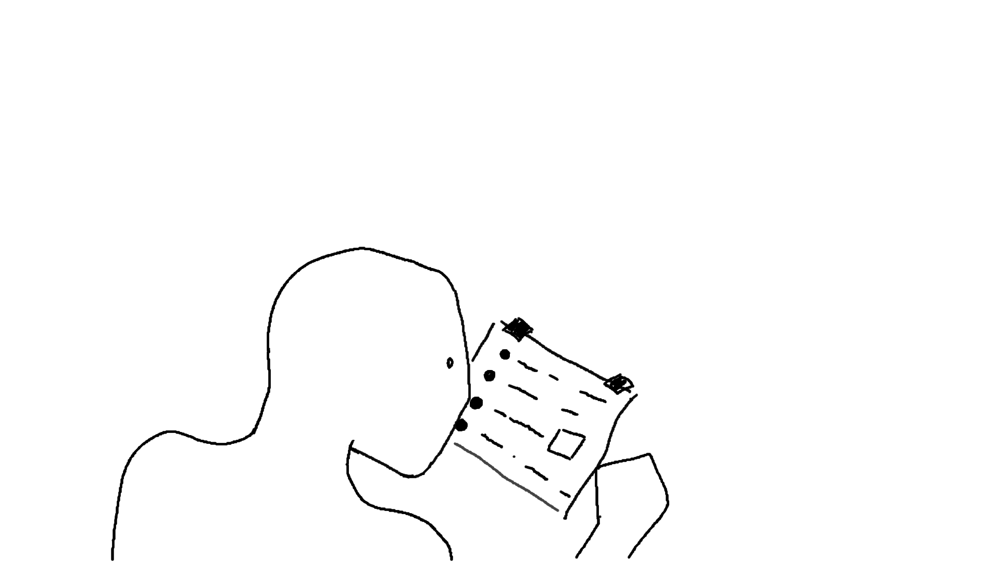

Hello and welcome back. We left off last time after introducing the term compiler,
and today we will discuss just that. During the 1950s, the world's first programmers
would communicate with their operators by translating each request into 0s and 1s. To
communicate this, they punctured a sheet of paper and fed it to the machine, which
translated it into binary language. In order to avoid having to translate words into
0's and 1's, a brilliant man created his own type of dictionary.
Along with this dictionary he also created a small program that said roughly:
- -Read a word
- -look it up in the dictionary
- -mark the translation on a piece of paper
- -repeat for each word
- -execute the sheet as written
By doing this the operator would be given a set of words (far more convenient than a set of 0's and 1's for programmers).
And he would translate them himself into binary language on a convenient slip of paper.

And then execute them. As a result, Assembly, the first programming language (in reality not really the first, but I simplify) was born.
Compiler evolution
Assembly , as much as I love it and appreciate its specific uses, is objectively a pain in the ass. Why you ask?
But simply because it is a low-level language. That is, it is a language that closely resembles how computers reason,
which unfortunately, is very different from how humans reason.
Therefore, to this day I don't think it is useful to learn assembly especially as a first language,
unless you are interested in working in a field where assembly is very important (see microcontrollers etc...).
After some reflections I decided that in this site we will talk mainly about Python in order to give practical
examples of the concepts that we will address. Since it is a high-level language (much more like human reasoning)
it is much easier to learn for someone just starting out.
But the question arises, how did they create Python? Since they already had assembly why make more?
As I mentioned, Assembly is great when compared to 0 and 1, but some programmers of the time wanted
something more. During one good day, a programmer noticed that assembly seemed to lack many useful features,
so he decided to add them. In order to do that he took the original compiler code and rewrote it using
assembly adding some features.
Once he passed this code to the operator it would use the old dictionary to create a new and better one.
So the second compiler was born with a few improvements over the first. With the second they wrote the
third and so on. And then, on a special day, a man thought about creating a completely different language.
Thus was born C the most famous language of all time
And began the epic journey that led to modern
High-level language
But more about that in the next chapter.
Thanks for reading this far and see you next Sunday
FINAL SPAM
if you want to support my work you can
donate something to my:
Ko-Fi
If you want to find out trivia about the IT world I post daily on my:
Instagram page